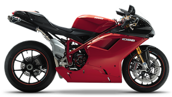

(Lower memory usage, less granular color)
(Higher memory usage, more granular color)

A comparison between the output quality of ImageSharp and PngQuant.
| Original 73.8kb | PngQuant 22.8kb | ImageSharp 22.3kb (Lower memory usage, less granular color) |
ImageSharp-Hi 21.8kb (Higher memory usage, more granular color) |
|---|---|---|---|
|  | |
PngQuant is the industry standard. It's an incredible piece of work and does it's one task very, very well.
ImageSharp's quantization is designed to have extremely configurable.
You can choose how many colors, what error diffusion algorithm (or none) to use and I'm thinking of adding configuration for the intensity of the quantization pass (higher-lower memory). These examples
There's trade-off in it's flexibilty though in that we cannot offer some of the specific algorithmic tweaks that PngQuant does (modeified Median Cut algorithm, adaptive variance limits in error diffusion) that allow it to deliver pixel perfect output.
However, I think we do pretty well!